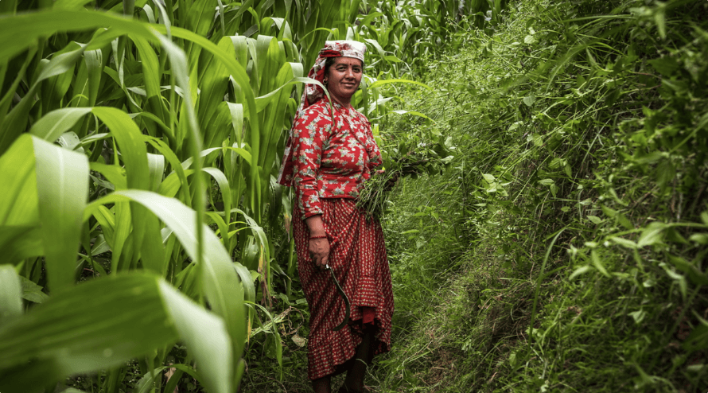

Get 10% off your first therapy or coaching session.
Claim your discount
Reflections, research, and real talk on culturally aware mental health, from our team and community.
International Self-Care Day falls on 24 July, and the date carries a quiet message. It stands for looking after yourself 24 hours a day, 7 days a week.
Read moreWe have officially reached the midpoint of the year. For many of us, June brings a familiar wave of panic.
Read more
Lately, a concept has been resonating deeply with many young adults: the "Odyssey Years."
Read moreMoving to a new country to study takes real courage. But nobody tells you about the other side of it.
Read moreAs much as we would love to wave a magic wand to automatically become fit, our bodies don’t get strong because we simply wish for it.
Read moreYou've seen affirmations everywhere - on Instagram, in journals, on cards. But here's the question nobody answers honestly: Do they actually work, or are they just pretty words?
Read moreOctober is Mental Health Month in Australia, and the intersection between racism and mental health is something many of us feel deeply, yet often struggle to put into words.
Read more
In recent years, there has been growing recognition of the importance of integrating spirituality and religion into therapy.
Read more
Then the conversation switches to something mundane like the weather. Most of us have had similar moments, where we truly wished they had lingered on that question.
Read moreLet’s face it: the idea of "rest" isn't always simple.
Read moreDid you know it’s currently Minority Mental Health Awareness Month?
Read moreOne of the most difficult phrases to say is: I’m sorry.
Read moreJune marks LGBTQIA Pride Month worldwide. A time to honour the resilience, visibility, and rights of lesbian, gay, bisexual, transgender, non-binary, and queer individuals.
Read moreWhen I first came across the phrase “Elder Daughter Syndrome”, I closed my eyes and let out a deep breath.
Read moreMay is a powerful month of reflection and action—it’s Mental Health Awareness Month, a time dedicated to breaking the stigma around mental health and ensuring that everyone, everywhere, has access to…
Read more“You can only hold your breath under water for so long,” a close friend once told me. “If you don’t surface for air, you will drown.”
Read moreStress is a natural response to life's challenges, but when left unmanaged, it can affect our overall well-being in serious ways.
Read more
Did you know that 50% of people drop off from their therapist within the first three sessions?
Read moreEvery year, as New Year’s celebrations fade and champagne flutes are washed and stored, millions of people around the globe take on a challenge: Dry January.
Read moreIn a world that moves faster than ever, where digital distractions abound and challenges to our mental health and well-being are on the rise, the simple practice of daily affirmations can be a…
Read more
“You must be happy because you’ve gained weight!”
Read moreA healthy practice we often advocate at Tala Thrive is a regular practice of gratitude - whether it’s keeping a daily journal, writing things you’re grateful for, or taking quality time off for…
Read moreI recently met with a male doctor to discuss a medical procedure.
Read more
This October, we’re celebrating Black History Month (BHM).
Read moreChances are you’ve also felt the shock of learning someone you considered “strong” and “unflappable” succumbed to suicide.
Read more"It’s exhausting to have to educate your therapist."
Read moreCulturally competent mental health care is our priority both internally within our team and externally for our various communities.
Read moreLet’s face it. No matter how much you try to walk in other people's shoes in a show of solidarity, their experiences are so unique that all you can really do is listen to their stories and offer your…
Read moreIn the UK, there’s a particularly disturbing stereotype within the health system that specifically marginalises and, ultimately, harms South Asian women.
Read moreJune is Men’s Health Month and every year, it’s observed to encourage men and boys to proactively take care of their health.
Read moreThis was a question I recently posed to a dear friend who has been dealing with a lot of her emotions publicly.
Read more
You’ve probably seen posts popping up all around social media celebrating “Earth Month” and urging us to celebrate our planet, reevaluate our relationship with it, and take sustainable actions…
Read moreAs we celebrate the incredible achievements, historical importance, and modern tenacity of what it means to be a woman navigating this world, I want to take a moment to reflect on the word…
Read moreI’d like to tell you a little story…
Read moreAt the beginning of each year, we often create long lists of resolutions with good intentions, but they can actually cause undue mental stress.
Read more